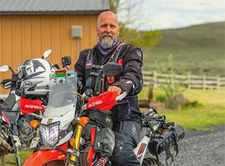
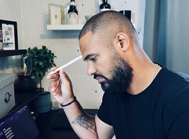
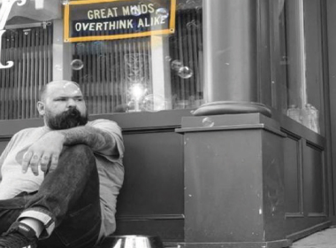
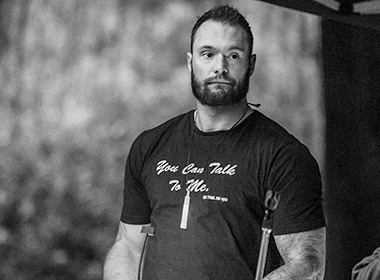
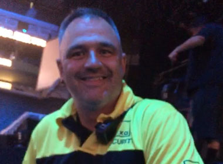

Over 100 Depression, Anxiety, & Other Mental Health Success Stories
100+ inspiring recovery stories from men who have overcome various mental health struggles, including depression, anxiety, and suicidal thoughts.
100+ inspiring recovery stories from men who have overcome various mental health struggles, including depression, anxiety, and suicidal thoughts.
YOU ARE NOT ALONE
Sometimes, you only need ONE thing for your brain to latch onto and motivate you to help you get out of a bad situation.”
– Garry’s Story
Recovery is possible. We have over 100 stories from real men who have faced various mental health challenges, sharing their journeys, lessons and strategies learned, and key turning points.
Our story contributors come from all walks of life: students, fathers, first responders, athletes, teachers, musicians, and more. Their experiences show that mental health issues don’t discriminate. They also challenge harmful myths that associate seeking help with weakness, showing instead the incredible strength it takes to face one’s struggles head-on.
Unfortunately, it’s not uncommon for men to reach out only after hitting rock bottom. It’s time to break that pattern. The men who have shared their stories here are doing their part to make that happen.
Whether it’s finding ways to manage symptoms, reclaiming a sense of control, or rediscovering purpose, these stories show that recovery is not only possible, it’s real.
When battling anxiety, depression, suicidal thoughts, or other mental health difficulties, it can feel like no one truly understands your pain. These stories come from men who do.
We’ve organized their stories based on common mental health challenges, recovery strategies, and life stressors.
Depression in men can manifest as anger, physical pain, or avoidance, as well as intense sadness and hopelessness. Its symptoms vary widely, meaning that depression can look different for everyone.

“I used to think that depression was something that only happened to other people. That it was something that you could just shake off… At first I tried to ignore it. I told myself I was just feeling a little down and then it would pass…. Those who know me would have never guessed I was as down as I was.”
“I cannot emphasize enough how much just saying stuff out loud has helped me. I’m very fortunate to have family and friends that are open to discussing mental health… but it was still a tough thing to actually do for the first time.”

“It was a simple moment of transparency from a friend, over a cup of coffee one day, that somehow cracked the vault. He confided in me about some personal health struggles, and after he finished, he simply asked…”What are you holding onto, Mike?” – I couldn’t stop myself. I told him everything.”
More stories about battling depression.
Anxiety involves excessive worry and fear, the intensity of which is often out of proportion with the realities of one’s situation. It can feel like an invisible weight you can’t shake. But with the right support and strategies, it can be managed and overcome.
“I struggled to come to terms with my sexuality for a long time…shutting myself away and punishing myself for any “gay thoughts” that entered my head.”
“Mindfulness journaling really changed how I view myself and the world, how I talk to myself and others, and helped me become more accepting and compassionate, all of which dismantled the power that anxiety had over me.”
“As someone who has dealt with crippling anxiety and depression throughout most of my life, I know what it is like to struggle with inner demons, a lack of belief in myself, and feeling like a failure.”
More stories about overcoming anxiety.
Suicidal thoughts are often rooted in a sense of worthlessness, hopelessness, or the belief that we are a burden to others. But there are ways to break through the darkness and regain hope.

“A lot of terrible things happened to me – But I was so afraid of letting those things define me – that I was letting it define me as a closed-off, guarded, and generally just walled-off person… Just brushing pretty traumatic things under the rug, only led to a really lumpy rug.”
“At the end of 2010, I set a date I would take my life if I felt nothing had improved. But when the date finally came I instead felt an enormous freedom, as I realized I could either take my own life or do literally anything else with it… That started a journey of self discovery for me.”

“Finding my ‘why’ was the biggest thing that helped me to turn around my life. There was a time I thought my son deserved better than what I could give him, but I turned that around to what if I got better for him, then I could get better for me, then I could help other people get better.”
More stories discussing suicidal thoughts.
Men can face a variety of mental health challenges that can feel complex and overwhelming, including C-PTSD, substance use, ADHD, OCD, and bipolar disorder.
“Instead of being a place that brought me down, the psychiatric ward was a place that lifted me up. I found a community where I felt seen and heard. When I’m feeling low, I often think back to the psych ward to remember those positive feelings.”
“With the help of my therapist, I was able to delve deep into myself and feel the betrayal and trauma. It was by no means easy, but when I could accept what happened, I was able to begin healing.”

“After battling severe depression and anxiety, drinking near daily since my teens, I decided with the help of a friend to stop drinking. After about eight months, I enrolled in a mental health and addiction program at a local hospital. Had I not gotten help when I did, there is no way I would be here today.”
More stories about recovery from mental health issues like OCD, Bipolar Disorder, PTSD, and Substance Use.
These men have shared their stories in brief video interviews, offering a personal look at their journeys through mental health challenges and recovery.
“Suicide went from a fantasy to something I thought was just a matter of time. I couldn’t keep going through the pain. I saw no other way …I was so lucky to survive, so lucky to get a second chance, so lucky to learn that I was wrong”
“I tried to hold all my emotions inside and pretend like nothing was wrong… I started having suicidal thoughts and the only thing I would feel was anger or sadness – that was my state of being – and I realized that wasn’t something I wanted. That’s not how I wanted to live my life and I didn’t want to end my life, so I reached out.”
“I stayed inside my basement for about a year. I rarely left… I was in this darkness – emotionally, but even literally. I didn’t see the light at the end of the tunnel, it just never appeared to me that this was ever going to end… I’ve learned that now I can live a life with depression, yet still be happy. And that I’m worth that.”
More video stories.
Everyone’s journey is influenced by their unique life experiences, but certain themes repeatedly emerge as critical to recovery from depression and other mental health challenges. These themes aren’t just personal advice; they are evidence-based approaches proven to support healing. Explore stories by strategies that played a key role in men’s recovery:
For more information and insights on recovery strategies and how to apply them to your own journey, visit our articles on Tips and Skills and Treatment Options. Also, explore our Self-Care Toolkit for actionable tips to start taking care of yourself.
Certain life events and transitions can be terribly challenging, and even deeply painful, reshaping the way we view the world. These struggles often have a lasting impact on our mental health. Find stories that talk about:
Many celebrities have spoken out about their struggles with poor mental health in recent years, helping to break down stigma and show that even those in the spotlight who seemingly “have it all” face mental health challenges just like the rest of us.
Their courage to share their experiences has inspired countless others to seek help. Below, you’ll find inspiring quotes (and even song lyrics) from well-known public figures that may be helpful as you navigate your own journey toward better health.
At ThriveWell, we support men on their road to recovery and better mental health. Whether you’re just starting your recovery journey or have been living with a mental health challenge for a while, you are not alone. Let these stories remind you that recovery is within reach—and we’re here to walk with you every step of the way.
“Sharing my journey with depression is the most powerful tool to heal myself and to help others. Every one of us as a story to share that can help and inspire somebody else”
For many men, sharing one’s story is a crucial part of healing. It’s about taking ownership of one’s life, recognizing that no one is immune from suffering, and that all of us need support when going through tough times. By opening up, these men become a source of hope for others.
Your story could be the lifeline someone else is waiting for. Whether it’s sharing your darkest moments or the breakthroughs that helped you keep going, your words can inspire strength and courage in someone else’s journey.
Sometimes, the simplest act of sharing is the most powerful form of healing—for both you and others. One honest story can spark real change—it could be yours.
To hear about new stories as soon as they’re released, follow us on social media for daily inspiration and updates.
You can also sign up for our monthly newsletter to get important updates, including surveys, prize draws, community fundraisers, new articles, and more!
Move for something that matters! Between June 1–15, walk, run, bike, or hike for men's mental health.
Let's Step Up for our dads, brothers, partners, sons, uncles, friends, co-workers — and ourselves.